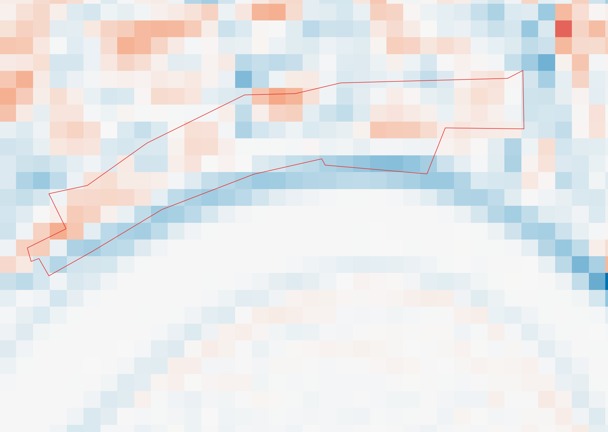
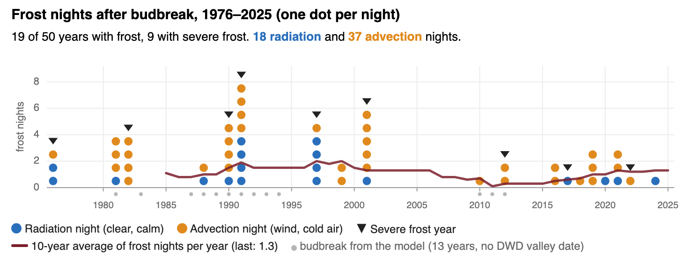

Frost risk of a vineyard plot in Kröv · Riesgo de helada de una parcela de viñedo en Kröv
OMEGA Space · Kennenlerngespräch 11.11.2026 · Deutsch, darunter Englisch (grau) und Spanisch (kursiv)
Auf einen Blick · At a glance · De un vistazo
Gelände: steiler Hang nach Süden, direkt an der Mosel.
Terrain: steep slope facing south, right on the Moselle.Terreno: ladera empinada orientada al sur, junto al Mosela.
Kaltluft: In klaren, ruhigen Nächten sammelt sie sich unten am Hang.
Cold air: on clear, calm nights it collects at the bottom of the slope.Aire frío: en noches despejadas y tranquilas se acumula abajo en la ladera.
Frost nach dem Austrieb: in 19 von 50 Jahren, zuletzt in 8 von 11 Jahren. Stark 2017 und 2022.
Frost after budbreak: in 19 of 50 years, recently in 8 of 11 years. Severe in 2017 and 2022.Helada tras la brotación: en 19 de 50 años, últimamente en 8 de 11. Fuerte en 2017 y 2022.
Messstation Traben-Trarbach (1 km, Steilhang, 132 m), 2008–2025: 65 Frostnächte nach dem Austrieb statt 16 in ERA5. In klaren Nächten 2,3 °C kälter. ERA5 unterschätzt den Frost.
Station Traben-Trarbach (1 km, steep slope, 132 m), 2008–2025: 65 frost nights after budbreak instead of 16 in ERA5. 2.3 °C colder on clear nights. ERA5 underestimates frost.Estación Traben-Trarbach (1 km, ladera empinada, 132 m), 2008–2025: 65 noches de helada tras la brotación en vez de 16 en ERA5. 2,3 °C más fría en noches despejadas. ERA5 subestima la helada.
Einschätzung: mittleres bis hohes Risiko, unten am Hang am höchsten.
Assessment: medium to high risk, highest at the bottom of the slope.Valoración: riesgo medio a alto, más alto abajo en la ladera.
Die Fläche The plotLa parcela
Ort
Kröv an der Mosel (Großlage Kröver Nacktarsch). Mitte: 49,98444° N, 7,09784° O (Angabe von OMEGA)Kröv on the Moselle. Centre: 49.98444° N, 7.09784° E (given by OMEGA)Kröv, junto al Mosela. Centro: 49,98444° N, 7,09784° E (dato de OMEGA)
Nutzung
Weinberg. Rebsorte nicht angegeben, wahrscheinlich Riesling (die häufigste Sorte an der Mosel)Vineyard. Variety not given, probably Riesling (the most common variety on the Moselle)Viñedo. Variedad no indicada, probablemente Riesling (la más común en el Mosela)
Größe
7,72 ha (ca. 730 × 320 m)7.72 ha (about 730 × 320 m)7,72 ha (aprox. 730 × 320 m)
Höhe
104 bis 185 m über dem Meer (81 m Unterschied), gemessen mit dem DGM1 in QGIS104 to 185 m above sea level (81 m difference), measured with DGM1 in QGIS104 a 185 m sobre el nivel del mar (81 m de diferencia), medido con el DGM1 en QGIS
Neigung
im Mittel 24,7°, also ca. 46 %: 46 m Höhe auf 100 m Strecke (tan 24,7° ≈ 0,46). Für jeden m² aus der Höhe der Nachbarn berechnet, dann gemittelt → Steillage (ab 30 %)24.7° on average, so about 46 %: 46 m of height over 100 m (tan 24.7° ≈ 0.46). Calculated for each m² from the height of its neighbours, then averaged → steep slope (from 30 %)24,7° de media, es decir, aprox. 46 %: 46 m de altura en 100 m (tan 24,7° ≈ 0,46). Calculado para cada m² a partir de la altura de sus vecinos y luego promediado → ladera empinada (desde 30 %)
Richtung
Süd (ca. 174°). Keine Koordinate, sondern die Himmelsrichtung, in die der Hang zeigt (0° = Nord, 180° = Süd), aus dem DGM1 berechnetSouth (about 174°). Not a coordinate, but the compass direction the slope faces (0° = north, 180° = south), calculated from DGM1Sur (aprox. 174°). No es una coordenada, sino la dirección hacia la que mira la ladera (0° = norte, 180° = sur), calculada con el DGM1
Das Gelände von oben. Rot = die Fläche. Die Linien quer zum Hang sind Terrassen und Mauern.
The terrain from above. Red = the plot. The lines across the slope are terraces and walls.El terreno desde arriba. Rojo = la parcela. Las líneas que cruzan la ladera son terrazas y muros.
Frage von OMEGA
Welche freien Satelliten-, Höhen- und Wetterdaten nutzen Sie für Gelände und Frostgeschichte? Warum?
Which free satellite, elevation and weather data do you use for terrain and frost history? Why?¿Qué datos libres de satélite, altura y clima usa para el terreno y el historial de heladas? ¿Por qué?
DatenDataDatos
Woher?SourceFuente
Wofür?What for?¿Para qué?
Temperatur
ERA5-Land (Copernicus): feinere Version von ERA5 nur für Land, Raster ca. 9 km. Gut für Temperatur und Feuchte am Boden. Über Open-Meteo, stündlich seit 1976.ERA5-Land: finer, land-only version of ERA5, grid about 9 km. Good for temperature and humidity near the ground. Via Open-Meteo, hourly since 1976.ERA5-Land: versión más fina de ERA5, solo para tierra, cuadrícula de unos 9 km. Buena para temperatura y humedad junto al suelo. Vía Open-Meteo, por horas desde 1976.
Wie kalt jede Nacht war. Ich brauche Stunden, weil Frost nachts kommt.How cold each night was. I need hours because frost comes at night.Lo fría que fue cada noche. Necesito horas porque la helada llega de noche.
Wind, Wolken
ERA5 (Copernicus): globales Modell der ganzen Atmosphäre, Raster ca. 25 km. Wolken, Sonne und Wind liefert Open-Meteo nicht aus ERA5-Land, darum hier ERA5.ERA5: global model of the whole atmosphere, grid about 25 km. Open-Meteo does not provide clouds, sunshine and wind from ERA5-Land, so I use ERA5 here.ERA5: modelo global de toda la atmósfera, cuadrícula de unos 25 km. Open-Meteo no da nubes, sol ni viento de ERA5-Land, por eso aquí uso ERA5.
Ob die Nacht ruhig und klar war. Dann wird es am Boden besonders kalt.Whether the night was calm and clear. Then it gets especially cold near the ground.Si la noche fue tranquila y despejada. Entonces hace especialmente frío junto al suelo.
Höhe und Zeit
ERA5-Land: Raster ca. 9 km. Open-Meteo passt die Temperatur mit einem Höhenmodell (ca. 90 m) an die Höhe des Punktes an (ca. −0,65 °C pro 100 m). Zeit: Ortszeit (Europe/Berlin).
Ich bekomme also nicht den Rohwert des 9-km-Pixels (wie in Google Earth Engine, in UTC), sondern einen an die Höhe angepassten Wert in Ortszeit.ERA5-Land grid about 9 km. Open-Meteo adjusts the temperature to the point's height with a terrain model (about 90 m), about −0.65 °C per 100 m, in local time. So I do not get the raw 9 km pixel (as in Google Earth Engine, in UTC), but a height-adjusted value in local time.ERA5-Land: cuadrícula de unos 9 km. Open-Meteo ajusta la temperatura a la altura del punto con un modelo de elevación (unos 90 m), unos −0,65 °C por cada 100 m, en hora local. No es el píxel bruto de 9 km (como en Google Earth Engine, en UTC), sino un valor ajustado a la altura y en hora local.
Gelände
DGM1 Rheinland-Pfalz (Laser, 1 m)
Höhe, Neigung, Richtung. 1 m = ein Wert pro 1 × 1 m. Die Fläche hat 77.200 m², also ca. 77.000 Höhenwerte (ein 90-m-Modell hätte nur ca. 10).Height, slope, direction. 1 m = one value per 1 × 1 m. The plot has 77,200 m², so about 77,000 height values (a 90 m model would have only about 10).Altura, pendiente, orientación. 1 m = un valor por 1 × 1 m. La parcela tiene 77.200 m², así que unos 77.000 valores (un modelo de 90 m tendría solo unos 10).
Austrieb
Deutscher Wetterdienst (DWD)
Der Tag, an dem die Rebe zu wachsen beginnt. Frost ist erst danach gefährlich.The day the vine starts to grow. Frost is only dangerous after that.El día en que la vid empieza a crecer. La helada solo es peligrosa después.
Für jede Nacht (20 bis 8 Uhr) nehme ich die tiefste Temperatur, nicht den Mittelwert: Der Schaden passiert im kältesten Moment, meist vor Sonnenaufgang.
For every night (20:00 to 08:00) I take the lowest temperature, not the mean: the damage happens at the coldest moment, usually before sunrise.Para cada noche (20 a 8 h) tomo la temperatura más baja, no la media: el daño ocurre en el momento más frío, normalmente antes del amanecer.
Frost = 0 °C oder kälter. Starker Frost = −1,5 °C oder kälter.
Frost = 0 °C or colder. Severe frost = −1.5 °C or colder.Helada = 0 °C o menos. Helada fuerte = −1,5 °C o menos.
Ich zähle nur Frost nach dem Austrieb, bis Ende Mai. Vorher ist die Knospe geschützt. In 50 Jahren gab es danach keinen Frost mehr (spätester: 2. Mai 1981).
I only count frost after budbreak, until the end of May. Before that the bud is protected. In 50 years there was no frost after that (latest: 2 May 1981).Solo cuento heladas tras la brotación, hasta finales de mayo. Antes la yema está protegida. En 50 años no hubo heladas después (la última: 2 de mayo de 1981).
Mit Wind und Wolken bestimme ich die Frostart (Erklärung in Teil 2).
With wind and clouds I decide the frost type (explained in part 2).Con el viento y las nubes determino el tipo de helada (explicado en la parte 2).
Frage von OMEGA
Wie beeinflusst das Gelände das Kleinklima? Wann ist Frost für die Rebe besonders gefährlich? Was bedeutet das für die Auswertung?
How does the terrain shape the microclimate? When is frost especially dangerous for the vine? What does that mean for the analysis?¿Cómo influye el terreno en el microclima? ¿Cuándo es especialmente peligrosa la helada para la vid? ¿Qué significa eso para el análisis?
Wo sammelt sich die kalte Luft? Where does the cold air collect?¿Dónde se acumula el aire frío?
Kalte Luft ist schwer. In klaren, ruhigen Nächten fließt sie den Hang hinunter, wie Wasser, und sammelt sich unten nahe der Mosel. Mauern, Hecken, Wege oder Gebäude können sie aufhalten. Wald oder Hochflächen oberhalb können zusätzliche Kaltluft liefern.
Cold air is heavy. On clear, calm nights it flows down the slope, like water, and collects at the bottom near the Moselle. Walls, hedges, paths or buildings can hold it back. Forest or plateaus above can send extra cold air.El aire frío pesa. En noches despejadas y tranquilas baja por la ladera, como el agua, y se acumula abajo, cerca del Mosela. Muros, setos, caminos o edificios pueden frenarlo. Un bosque o una meseta encima pueden aportar más aire frío.
Ergebnis (Bild rechts): Unten am Hang (blauer Streifen) ist das Frostrisiko am höchsten.
Result (picture on the right): at the bottom of the slope (blue strip) the frost risk is highest.Resultado (imagen a la derecha): abajo en la ladera (franja azul) el riesgo de helada es el más alto.

tiefer: Kaltluft bleibt höher: Kaltluft fließt ab
blue: lower, cold air stays · red: higher, cold air drains awayazul: más bajo, el aire frío se queda · rojo: más alto, el aire frío se va
TPI (Topographic Position Index): Höhe einer Stelle minus mittlere Höhe ihrer Umgebung. Ich habe das DGM1 auf Quadrate von 25 m vergröbert; jedes Quadrat wird mit seinen 8 Nachbarn verglichen, also mit ca. 75 m Umgebung. So zählen kleine Dinge wie Mauern nicht, nur die Form des Hangs. Negativ = Senke/Hangfuß, positiv = Kuppe/Kante.
TPI (Topographic Position Index): height of a spot minus the mean height of its surroundings. I coarsened DGM1 to 25 m squares; each square is compared with its 8 neighbours, so with about 75 m of surroundings. So small things like walls don't count, only the shape of the slope. Negative = hollow/foot, positive = hilltop/edge.TPI (índice de posición topográfica): altura de un punto menos la altura media de su entorno. Simplifiqué el DGM1 a cuadrados de 25 m; cada uno se compara con sus 8 vecinos, es decir, con unos 75 m de entorno. Así las cosas pequeñas como muros no cuentan, solo la forma de la ladera. Negativo = hondonada/pie, positivo = cima/borde.Quelle: Weiss, A. (2001): Topographic Position and Landforms Analysis
Wann ist Frost gefährlich? When is frost dangerous?¿Cuándo es peligrosa la helada?
Vor dem Austrieb (die Rebe beginnt zu wachsen) ist die Knospe geschützt. Danach erfrieren junge Triebe schon bei ca. −0,5 bis −2 °C, an der Mosel meist im April. Den Tag des Austriebs nehme ich so:
Before budbreak (the vine starts to grow) the bud is protected. After that, young shoots freeze at about −0.5 to −2 °C, at the Moselle usually in April. I get the day of budbreak like this:Antes de la brotación (la vid empieza a crecer) la yema está protegida. Después, los brotes jóvenes se hielan con unos −0,5 a −2 °C, en el Mosela normalmente en abril. El día de brotación lo obtengo así:
Wenn möglich: der beobachtete Tag des DWD an einer Station im Moseltal (Ürzig, Enkirch, Wintrich).
If possible: the day observed by the DWD at a station in the Moselle valley (Ürzig, Enkirch, Wintrich).Si es posible: el día observado por el DWD en una estación del valle del Mosela (Ürzig, Enkirch, Wintrich).
Sonst berechne ich ihn: GDD pro Tag = max(0, (Tmax + Tmin)/2 − 7,5). Beispiel: 16 °C und 6 °C → 11 − 7,5 = 3,5. Summe ab 1. Januar; erster Tag mit Summe ≥ 40 = Austrieb. Die 40 habe ich an 19 Jahren DWD Ürzig gewählt (kleinster Fehler: ca. 11 Tage, Modell ca. 3 Tage zu früh).
Otherwise I calculate it: GDD per day = max(0, (Tmax + Tmin)/2 − 7.5). Example: 16 °C and 6 °C → 11 − 7.5 = 3.5. Sum from 1 January; first day with sum ≥ 40 = budbreak. I chose 40 using 19 years of DWD Ürzig (smallest error: about 11 days, model about 3 days early).Si no, lo calculo: GDD por día = max(0, (Tmax + Tmin)/2 − 7,5). Ejemplo: 16 °C y 6 °C → 11 − 7,5 = 3,5. Suma desde el 1 de enero; primer día con suma ≥ 40 = brotación. Elegí 40 con 19 años del DWD en Ürzig (menor error: unos 11 días, el modelo unos 3 días antes).
DWD-Stationen DWD stationsEstaciones del DWD
Station
EntfernungDistanceDistancia
JahreYearsAños
LageLocationUbicación
Austrieb im Vergleich zu ÜrzigBudbreak vs ÜrzigBrotación frente a Ürzig
Enkirch ✓
2,5 km
1963–1986
Moseltal
4 Tage später
Ürzig ✓
7,3 km
1951–2025
Moseltal
—
Wintrich ✓
14,6 km
1995–2009
Moseltal
(nur 2 Jahre)
Wittlich
15,3 km
1952–2012
außerhalb des Tals
15 Tage später
✓ = genutzt: nah, im Moseltal, mit Jahren ab 1976. Andere Stationen sind sehr alt oder liegen in Seitentälern bzw. höher. Wittlich (außerhalb des Tals) treibt 15 Tage später aus: Der Ort ist sehr wichtig. Test: Mein Modell trifft Enkirch auf ca. 9 Tage.
✓ = used: close, in the Moselle valley, with years from 1976. Other stations are very old or lie in side valleys or higher. Wittlich (outside the valley) buds 15 days later: location matters a lot. Test: my model hits Enkirch within about 9 days.✓ = usadas: cercanas, en el valle del Mosela y con años desde 1976. Otras estaciones son muy antiguas o están en valles laterales o más altas. Wittlich (fuera del valle) brota 15 días más tarde: el lugar importa mucho. Prueba: mi modelo acierta Enkirch con unos 9 días.
Zwei Arten von Frost Two kinds of frostDos tipos de helada
FrostartTypeTipo
Wann?When?¿Cuándo?
Für die VersicherungFor insurancePara el seguro
Strahlungsfrostradiation frosthelada por radiación
klare, ruhige Nachtclear, calm nightnoche despejada y tranquila
Der Ort entscheidet: Unten friert es zuerst. Risiko einzelner Flächen.Location decides: the bottom freezes first. Risk for single plots.El lugar decide: abajo se hiela primero. Riesgo de parcelas concretas.
Advektionsfrostadvection frosthelada por advección
kalte Luft kommt mit Windcold air comes with windllega aire frío con viento
Die ganze Region wird kalt. Risiko vieler Flächen gleichzeitig.The whole region gets cold. Risk for many plots at once.Toda la región se enfría. Riesgo de muchas parcelas a la vez.
Grenzwerte (meine Wahl): Strahlungsfrost = Wolken unter 20 % und Wind unter 10 km/h. Die FAO beschreibt Strahlungsfrost als klar und windstill, ohne feste Zahlen (Snyder & de Melo-Abreu 2005); 20 % steht für „fast klar“. ERA5-Wind gilt in 10 m Höhe. FAO-56 (Allen et al. 1998): u₂ = u₁₀ × 4,87 / ln(67,8 × 10 − 5,42) ≈ u₁₀ × 0,75. Also 10 km/h → 7,5 km/h in 2 m; 5 km/h → 3,75 km/h (fast nie im Nachtmittel, daher fast kein Strahlungsfrost).
Limits (my choice): radiation frost = clouds below 20 % and wind below 10 km/h. FAO describes radiation frost as clear and calm, without fixed numbers (Snyder & de Melo-Abreu 2005); 20 % means “almost clear”. ERA5 wind is at 10 m. FAO-56 (Allen et al. 1998): u₂ = u₁₀ × 4.87 / ln(67.8 × 10 − 5.42) ≈ u₁₀ × 0.75. So 10 km/h → 7.5 km/h at 2 m; 5 km/h → 3.75 km/h (almost never as a night mean, so almost no radiation frost).Límites (elección mía): helada por radiación = nubes por debajo del 20 % y viento por debajo de 10 km/h. La FAO la describe como despejada y en calma, sin cifras fijas (Snyder y de Melo-Abreu 2005); 20 % significa «casi despejado». El viento de ERA5 es a 10 m. FAO-56 (Allen et al. 1998): u₂ = u₁₀ × 4,87 / ln(67,8 × 10 − 5,42) ≈ u₁₀ × 0,75. Así 10 km/h → 7,5 km/h a 2 m; 5 km/h → 3,75 km/h (casi nunca como media nocturna, por eso casi no salía helada por radiación).
Ergebnis: 50 Jahre Result: 50 yearsResultado: 50 años

Ein Punkt = eine Frostnacht nach dem Austrieb. Blau = Strahlung, orange = Advektion. ▼ = starker Frost. Linie = Mittel der letzten 10 Jahre.
One dot = one frost night after budbreak. Blue = radiation, orange = advection. ▼ = severe frost. Line = average of the last 10 years.Un punto = una noche de helada tras la brotación. Azul = radiación, naranja = advección. ▼ = helada fuerte. Línea = media de los últimos 10 años.
1976–2025: Frost in 19 von 50 Jahren, stark in 9 (z. B. 1991, 2017, 2022). Seit 2016 in 8 von 10 Jahren. Die Rebe treibt früher aus: im Mittel am 3. April statt am 25. April (1976–1985). Wärmere Frühjahre (Klimawandel) passen dazu (vgl. Leolini et al. 2020). Die Südlage macht den Austrieb früh, erklärt aber nicht die Änderung über die Jahre. Die Rebe ist so länger in Gefahr.
1976–2025: frost in 19 of 50 years, severe in 9 (e.g. 1991, 2017, 2022). Since 2016 in 8 of 10 years. The vine buds earlier: on average on 3 April instead of 25 April (1976–1985). Warmer springs (climate change) fit this (cf. Leolini et al. 2020). The south aspect makes budbreak early, but doesn't explain the change over the years. So the vine is at risk for longer.1976–2025: helada en 19 de 50 años, fuerte en 9 (p. ej. 1991, 2017, 2022). Desde 2016 en 8 de 10 años. La vid brota antes: de media el 3 de abril en vez del 25 de abril (1976–1985). Unas primaveras más cálidas (cambio climático) encajan con ello (cf. Leolini et al. 2020). La orientación sur hace que brote pronto, pero no explica el cambio con los años. Así la vid está más tiempo en peligro.
3Grenzen und Prüfung Limits and checkLímites y comprobación
Frage von OMEGA
Wo stoßen freie Daten bei dieser Fläche an ihre Grenzen? Wie prüfen Sie, ob die Ergebnisse plausibel sind?
Where do free data reach their limits for this plot? How do you check whether the results are plausible?¿Dónde llegan los datos libres a sus límites en esta parcela? ¿Cómo comprueba si los resultados son plausibles?
GrenzeLimitLímite
Was bedeutet das?What does it mean?¿Qué significa?
Grobes Wetter-Raster
ERA5 ist ein Modell auf einem Raster: ein Wert pro Quadrat von ca. 9 km (Temperatur) bzw. 25 km (Wind, Wolken). Oben und unten am Hang sind gleich.ERA5 is a model on a grid: one value per square of about 9 km (temperature) or 25 km (wind, clouds). Top and bottom of the slope are the same.ERA5 es un modelo en una cuadrícula: un valor por cuadrado de unos 9 km (temperatura) o 25 km (viento, nubes). Arriba y abajo de la ladera son iguales.
Messung in 2 m
In klaren, ruhigen Nächten liegt die kälteste Luft am Boden (Inversion). An den Knospen ist es oft 1–3 °C kälter (vgl. Snyder & de Melo-Abreu 2005). Station Traben-Trarbach: in 20 cm im Mittel 1,7 °C kälter als in 2 m. ERA5 zeigt also zu wenig Frost.On clear, calm nights the coldest air lies at the ground (inversion). At the buds it is often 1–3 °C colder (cf. Snyder & de Melo-Abreu 2005). Station Traben-Trarbach: at 20 cm on average 1.7 °C colder than at 2 m. So ERA5 shows too little frost.En noches despejadas y tranquilas el aire más frío está junto al suelo (inversión). En las yemas suele hacer 1–3 °C menos (cf. Snyder y de Melo-Abreu 2005). Estación Traben-Trarbach: a 20 cm de media 1,7 °C menos que a 2 m. ERA5 muestra pocas heladas.
Keine Inversions-Korrektur
Open-Meteo passt die Temperatur mit einer festen Regel an die Höhe an (unten wärmer). In Frostnächten ist es aber umgekehrt. Gemessen (Traben-Trarbach): in klaren, ruhigen Nächten 2,3 °C kälter als ERA5, bei Wind nur 0,7 °C.Open-Meteo adjusts the temperature to height with a fixed rule (warmer at the bottom). In frost nights it is the other way round. Measured (Traben-Trarbach): on clear, calm nights 2.3 °C colder than ERA5, with wind only 0.7 °C.Open-Meteo ajusta la temperatura a la altura con una regla fija (abajo más cálido). En noches de helada es al revés. Medido (Traben-Trarbach): en noches despejadas y en calma 2,3 °C más frío que ERA5, con viento solo 0,7 °C.
NDVI (Sentinel-2, 10 m)
Geprüft im Copernicus Browser, 2021–2023. NDVI = (B08 − B04)/(B08 + B04). Sommer 2021 ca. 0,65, März und August 2022 je 0,38 (Trockenheit), Herbst 2022 wieder ca. 0,7. Der Frost vom 10.04.2022 ist nicht sichtbar. Ein 10-m-Pixel mischt Reben, Schieferboden und Gras: Das NDVI zeigt hier Gras und Wasser, nicht Frostschäden.Checked in Copernicus Browser, 2021–2023. NDVI = (B08 − B04)/(B08 + B04). Summer 2021 about 0.65, March and August 2022 both 0.38 (drought), autumn 2022 about 0.7 again. The frost of 10 April 2022 is not visible. A 10 m pixel mixes vines, slate soil and grass: here NDVI shows grass and water, not frost damage.Comprobado en Copernicus Browser, 2021–2023. NDVI = (B08 − B04)/(B08 + B04). Verano 2021 unos 0,65, marzo y agosto 2022 ambos 0,38 (sequía), otoño 2022 otra vez unos 0,7. La helada del 10/04/2022 no se ve. Un píxel de 10 m mezcla cepas, suelo de pizarra y hierba: aquí el NDVI muestra hierba y agua, no daños por helada.
Wind in 10 m
Die Grenze 10 km/h (ca. 5 km/h an den Knospen) ist eine Schätzung, keine Messung (siehe Teil 2).The 10 km/h limit (about 5 km/h at the buds) is an estimate, not a measurement (see part 2).El límite de 10 km/h (unos 5 km/h en las yemas) es una estimación, no una medición (ver parte 2).
Austrieb
DWD-Station 7 km entfernt, Rebsorte unbekannt, Modell ca. ±11 Tage.DWD station 7 km away, variety unknown, model about ±11 days.Estación del DWD a 7 km, variedad desconocida, modelo de unos ±11 días.
Kaltluft-Bild
Nur ein Hinweis aus dem Gelände: zeigt wo, aber nicht wie kalt.Only a hint from the terrain: shows where, but not how cold.Solo una pista del terreno: muestra dónde, pero no cuánto frío.
So prüfe ich How I checkCómo lo compruebo
Gemacht: Austrieb-Modell mit 19 Jahren Ürzig verglichen, unabhängig mit Enkirch (ca. 9 Tage). Bekannte Frostjahre sind zu sehen: 2017 klar (−1,8 °C), 2024 schwach (−0,1 °C in 2 m).
Done: budbreak model compared with 19 years of Ürzig, independently with Enkirch (about 9 days). Known frost years are visible: 2017 clearly (−1.8 °C), 2024 weakly (−0.1 °C at 2 m).Hecho: modelo de brotación comparado con 19 años de Ürzig, y de forma independiente con Enkirch (unos 9 días). Los años de helada conocidos aparecen: 2017 claramente (−1,8 °C), 2024 débilmente (−0,1 °C a 2 m).
Gemacht: Messstation Traben-Trarbach (Agrarmeteorologie RLP, wetter.rlp.de): 1 km von der Fläche, Steilhang, 132 m (Fläche im Mittel 136 m), stündlich 2008–2025. Gleicher Austrieb und gleicher Zeitraum wie ERA5, nur die Nachttemperatur ist gemessen.
Done: station Traben-Trarbach (Agrarmeteorologie RLP, wetter.rlp.de): 1 km from the plot, steep slope, 132 m (plot mean 136 m), hourly 2008–2025. Same budbreak and period as ERA5, only the night temperature is measured.Hecho: estación Traben-Trarbach (Agrarmeteorologie RLP, wetter.rlp.de): a 1 km de la parcela, ladera empinada, 132 m (parcela de media 136 m), por horas 2008–2025. Misma brotación y mismo periodo que ERA5, solo la temperatura nocturna es medida.
2008–2025, nach dem Austrieb bis 31. Maiafter budbreak to 31 Maytras la brotación hasta el 31 de mayo
Ergebnis: ERA5 unterschätzt Frost an der Fläche deutlich, vor allem in klaren, ruhigen Nächten (Inversion). Mit Wind (Advektion) liegt ERA5 nah dran, z. B. 10.04.2022: ERA5 −1,9 °C, Station 0,0 °C. Grenzen: Station 1 km entfernt, nicht in der Fläche; 2006–2007 ohne Temperatur.
Result: ERA5 clearly underestimates frost at the plot, mainly on clear, calm nights (inversion). With wind (advection) ERA5 is close, e.g. 10 April 2022: ERA5 −1.9 °C, station 0.0 °C. Limits: station 1 km away, not in the plot; 2006–2007 without temperature.Resultado: ERA5 subestima mucho la helada en la parcela, sobre todo en noches despejadas y en calma (inversión). Con viento (advección) ERA5 se acerca, p. ej. 10/04/2022: ERA5 −1,9 °C, estación 0,0 °C. Límites: estación a 1 km, no en la parcela; 2006–2007 sin temperatura.
Gemacht: NDVI-Zeitreihe 2021–2023 im Copernicus Browser (Frost 10.04.2022): kein Frostsignal sichtbar.
Done: NDVI time series 2021–2023 in Copernicus Browser (frost 10 April 2022): no frost signal visible.Hecho: serie temporal de NDVI 2021–2023 en Copernicus Browser (helada 10/04/2022): no se ve señal de helada.
Für die genaue Fläche: 2–3 Thermometer im Weinberg (unten und oben) für einen Frühling.
For the exact plot: 2–3 thermometers in the vineyard (bottom and top) for one spring.Para la parcela exacta: 2–3 termómetros en el viñedo (abajo y arriba) durante una primavera.
4Einschätzung AssessmentValoración
Frage von OMEGA
Was sagen Sie einem Versicherer über diese Fläche, in zwei, drei Sätzen, wie am Telefon?
What do you tell an insurer about this plot, in two or three sentences, as on the phone?¿Qué le diría a una aseguradora sobre esta parcela, en dos o tres frases, como por teléfono?
„Die Fläche ist ein steiler Südhang an der Mosel. Oben ist das Frostrisiko gering, unten am Hang höher, weil sich dort nachts kalte Luft sammelt. Die Messstation 1 km daneben zeigt etwa viermal mehr Frostnächte nach dem Austrieb als das Wettermodell. Ich sehe ein mittleres bis hohes Risiko, am höchsten am Hangfuß, und würde es mit Sensoren in der Fläche prüfen.“
“The plot is a steep south-facing slope on the Moselle. At the top the frost risk is low, at the bottom higher, because cold air collects there at night. The weather station 1 km away shows about four times more frost nights after budbreak than the weather model. I see a medium to high risk, highest at the foot of the slope, and would check it with sensors in the plot.”«La parcela es una ladera empinada al sur junto al Mosela. Arriba el riesgo de helada es bajo, abajo más alto, porque allí se acumula el aire frío por la noche. La estación a 1 km muestra unas cuatro veces más noches de helada tras la brotación que el modelo. Veo un riesgo medio a alto, mayor al pie de la ladera, y lo comprobaría con sensores en la parcela.»
Warum „mittel bis hoch“? Nach ERA5 allein wäre es „mittel“: Frost oft (19 von 50 Jahren), aber meist leicht, stark etwa alle 5–6 Jahre. Die Station zeigt aber starken Frost in 2 m in fast jedem zweiten Jahr seit 2008, in 20 cm noch öfter. Der steile Hang hilft oben (Kaltluft fließt ab), der Hangfuß erhöht das Risiko unten.
Why “medium to high”? With ERA5 alone it would be “medium”: frost often (19 of 50 years) but mostly light, severe about every 5–6 years. The station, however, shows severe frost at 2 m in almost every second year since 2008, at 20 cm even more often. The steep slope helps at the top (cold air drains away), the foot of the slope raises the risk at the bottom.¿Por qué «medio a alto»? Solo con ERA5 sería «medio»: helada frecuente (19 de 50 años) pero sobre todo leve, fuerte aprox. cada 5–6 años. Pero la estación muestra helada fuerte a 2 m casi uno de cada dos años desde 2008, y a 20 cm aún más. La ladera empinada ayuda arriba (el aire frío se va); el pie de la ladera sube el riesgo abajo.
Nutzung von KI Use of AIUso de IA
Genutzt für: Erklärungen (Fachbegriffe und mir neue Programme wie QGIS), Python-Code und Literatursuche. Geprüft und geändert:
Used for: explanations (technical terms and programs new to me, such as QGIS), Python code and literature search. Checked and changed:Usada para: explicaciones (términos técnicos y programas nuevos para mí, como QGIS), código Python y búsqueda de literatura. Comprobado y cambiado:
Google Earth Engine → getestet, für Wetter nicht genutzt
Andere Werte (Tageswerte, UTC-Zeit, keine Höhenkorrektur).Different values (daily values, UTC time, no height correction).Valores distintos (diarios, hora UTC, sin corrección de altura).
Basis 10 °C → 7,5 °C
Mit 10 °C kam der Austrieb drei Wochen zu spät. 7,5 °C und Schwelle 40 an 19 Jahren Ürzig kalibriert (±11 Tage). Studien: unter 10 °C (Zapata 2015 ca. 7 °C, Leolini et al. 2020 6,7 °C, Pellegrino et al. 2022 5–10 °C).With 10 °C budbreak came three weeks too late. 7.5 °C and threshold 40 calibrated on 19 years of Ürzig (±11 days). Studies: below 10 °C (Zapata 2015 about 7 °C, Leolini et al. 2020 6.7 °C, Pellegrino et al. 2022 5–10 °C).Con 10 °C la brotación salía tres semanas tarde. 7,5 °C y umbral 40 calibrados con 19 años de Ürzig (±11 días). Estudios: por debajo de 10 °C (Zapata 2015 unos 7 °C, Leolini et al. 2020 6,7 °C, Pellegrino et al. 2022 5–10 °C).
Wind 5 → 10 km/h (Wolken unter 20 %)
Mit 5 km/h gab es fast keinen Strahlungsfrost, weil der Wind in 10 m modelliert ist (FAO-56: 2 m ≈ 0,75 × 10 m). Keine automatische Inversions-Korrektur.With 5 km/h there was almost no radiation frost, because wind is modelled at 10 m (FAO-56: 2 m ≈ 0.75 × 10 m). No automatic inversion correction.Con 5 km/h casi no había helada por radiación, porque el viento está modelado a 10 m (FAO-56: 2 m ≈ 0,75 × 10 m). No hay corrección automática de inversión.
Alle DWD-Stationen → nur Ürzig, Enkirch, Wintrich
Wittlich (außerhalb des Tals) treibt 15 Tage später aus und hätte Fröste versteckt (z. B. 1991).Wittlich (outside the valley) buds 15 days later and would have hidden frosts (e.g. 1991).Wittlich (fuera del valle) brota 15 días más tarde y habría ocultado heladas (p. ej. 1991).
Geländewerte
selbst in QGIS berechnet und mit dem Programm verglichencalculated myself in QGIS and compared with the programcalculados por mí en QGIS y comparados con el programa
Begriffe: ERA5 / ERA5-Land = Reanalyse des ECMWF für Copernicus: ein Wettermodell, das weltweite Messungen zu stündlichen Werten auf einem Raster verbindet, keine einzelnen Wetterstationen · Copernicus = Erdbeobachtungsprogramm der EU, Daten frei und kostenlos (z. B. im Copernicus Browser im Web) · QGIS = kostenloses Programm (Open Source) für Karten und Geodaten · DGM1 = Höhenmodell des Bodens von Rheinland-Pfalz, 1 m Raster, Laserscan aus dem Flugzeug · DWD = Deutscher Wetterdienst · TPI = vergleicht eine Stelle mit ihrer Umgebung · Austrieb = die Rebe beginnt zu wachsen · Hangfuß = unten am Hang. (ERA5 = modelo meteorológico que combina mediciones mundiales, no estaciones · Copernicus = programa de observación de la Tierra de la UE, datos libres y gratuitos · QGIS = programa libre de mapas · DGM1 = modelo de altura del suelo, 1 m, láser desde avión)